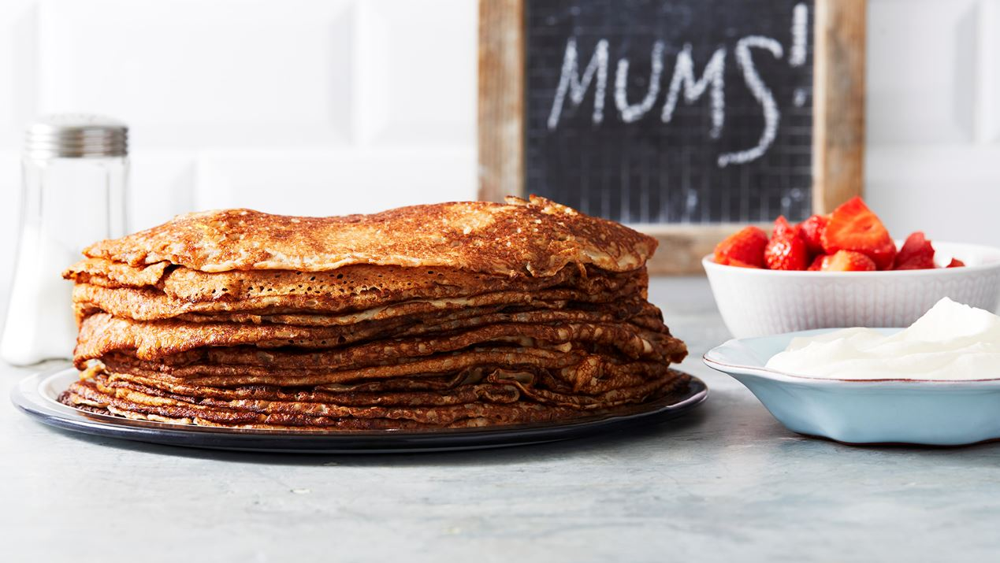

Mitt favorit-recept
Vad gör ett recept till ens favorit. Kanske är det smaken, kanske är det för man vill imponera på bekanta. Eller kanske är det den emotionella kopplingen man har. Ett recept som påminner en om ens barndom, eller i det här fallet kopplingen till ens barn. Pannkakor är en klassiker och någonting som lagas varje söndag till lunch. En tradition som uppskattas i hemmet.
